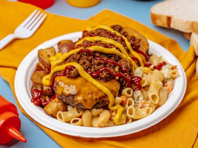

The Garbage Plate

Description
Meat, carbs and more carbs! This dish is every drunk college student's dream.
Ingredients
- 1 1/2 cup cooked macaroni
- 1/4 cup mayonnaise
- 2 tbsps diced celery
- 1 tbsp chopped carrot
- 1/4 tsp salt
- 1/4 tsp pepper
- 1 large potato baked and cubed
- 1 tbsp butter
- 2 hamburger patties
- 2 slices of cheese
- 3 slices of italian bread
- chopped onion (optional)
- refried beans (optional)
- mustard
- horseradish
- ketchup
Special Sauce
- 1 medium onion, chopped
- 1 garlic clove, minced
- 1 tbsp oil
- 1 lb ground beef
- 1 cup water
- 12 oz tomato paste
- 1/2 tbsp brown sugar
- 1 tsp ground black pepper
- 3/4 tsp cayenne pepper
- 1 tsp chili powder
- 1 1/2 tsps paprika
- 1/2 tsp ground cumin
- 1/2 tsp allspice
- 1/4 tsp cinnamon
- 1/2 tsp powdered clove
Steps
- Mix together macaroni, mayo, celery, seasoning and carrots and place into a large square foam container
- Fry potatoes in butter until crispy and put next to the macaroni salad on the plate
- Place optional beans on plate
- Cook hamburger until well done and top with sliced cheese
- Place burgers on top of macaroni salad and home fries
- Mix together equal parts mustard and horseradish and pour on top of burgers and top with optional onions
- Poor special sauce and ketchup over burgers
- Enjoy!
For Special Sauce
- In a large skillet, fry chopped onion and garlic in oil until soft. Add meat, stirring constantly to keep texture fine.
- Once meat is cooked, add water and tomato paste. Cook for 10 minutes.
- Add sugar and spices. Cook 30 minutes adding water if needed.